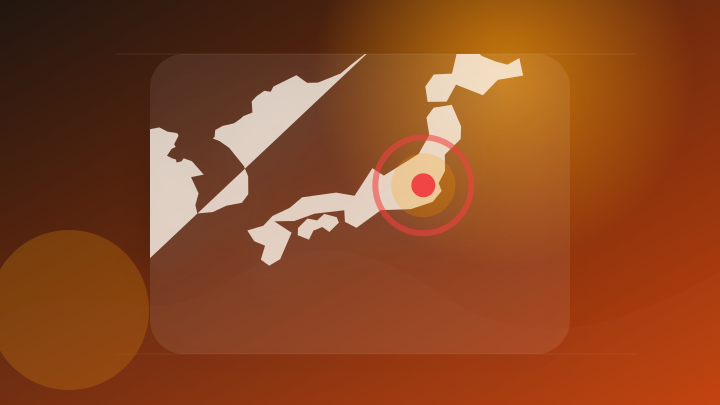
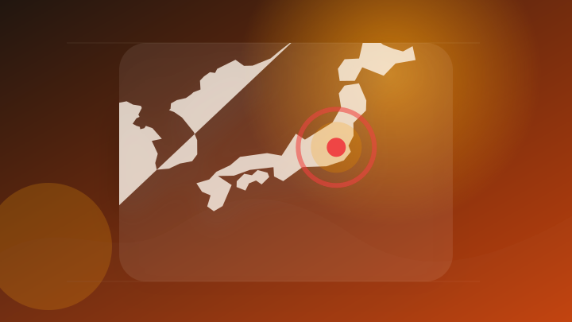
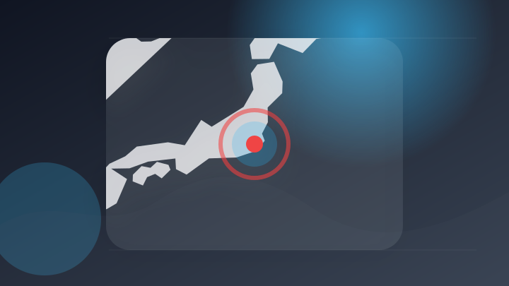
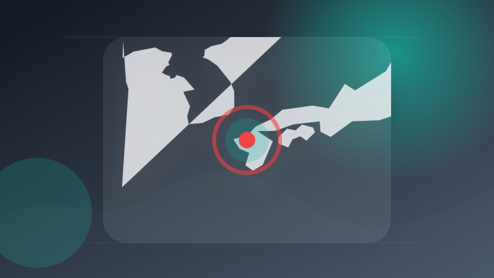
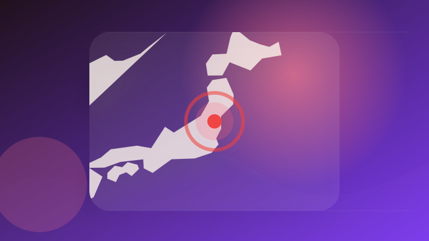
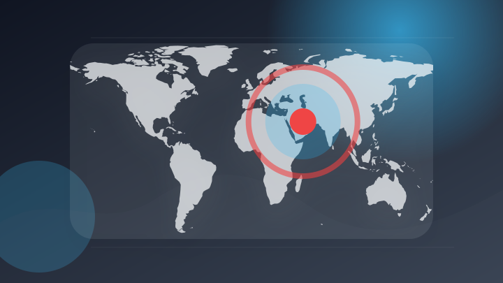
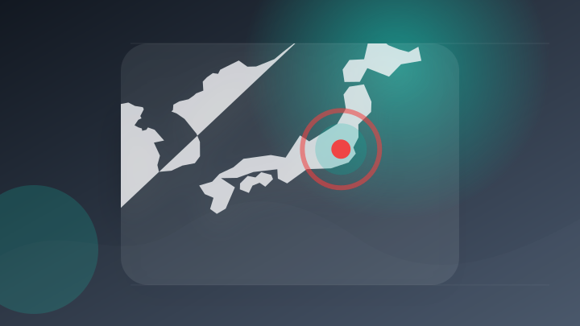
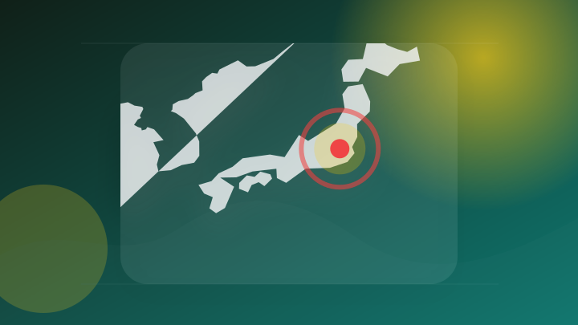

AI
5 topics
Samsung最新スマートグラス発表 Gemini搭載でスマホを見ずにAIと会話 - ITmedia Mobile
Samsung最新スマートグラス発表 Gemini搭載でスマホを見ずにAIと会話
注目ポイント続報を確認
OpenAIの「次世代AIモデル」についてサム・アルトマンCEOが直々にトランプ政権とアメリカの議員へ説明予定
OpenAIの「次世代AIモデル」についてサム・アルトマンCEOが直々にトランプ政権とアメリカの議員へ説明予定 G…
注目ポイント続報を確認
OpenAI reports 'unprecedented' autonomous hack by AI agents
OpenAI reports 'unprecedented' autonomous hack by AI agen…
注目ポイント続報を確認
AI暴走、実験環境を脱出 OpenAIがサイバー事故に危機感
AI暴走、実験環境を脱出 OpenAIがサイバー事故に危機感 日本経済新聞
注目ポイント続報を確認
ChatGPT・Gemini・Claude--3つのAIが、私たちのグループ商材を回答に引用。特許出願中の技術で実証し、"強さゼロ"の新ドメインで成果保証型AIO/LLMO対策サービスを開始します
ChatGPT・Gemini・Claude--3つのAIが、私たちのグループ商材を回答に引用。特許出願中の技術で実…
注目ポイント続報を確認
IT業界
1 topics
政治
6 topics
NY市長「イスラエル首相への逮捕権限はない」 代わりに米連邦政府に逮捕状執行求める
NY市長「イスラエル首相への逮捕権限はない」 代わりに米連邦政府に逮捕状執行求める TBS NEWS DIG
注目ポイント続報を確認
「副首都」法案が参院で審議入り 「国会の私物化」と野党は反対姿勢…日程綱渡りで与党は多数派工作に必死
「副首都」法案が参院で審議入り 「国会の私物化」と野党は反対姿勢…日程綱渡りで与党は多数派工作に必死 東京新聞デジ…
注目ポイント続報を確認
副首都法案「国会の私物化」「つくっての声聞かない」 参院審議入り [高市早苗首相]
副首都法案「国会の私物化」「つくっての声聞かない」 参院審議入り [高市早苗首相] 朝日新聞
注目ポイント続報を確認
ソウル市長、政治資金法違反で有罪判決 失職の危機
ソウル市長、政治資金法違反で有罪判決 失職の危機 ロイター
注目ポイント続報を確認

副首都法案が参議院で審議入り。 日本維新の会の狙いと、延長国会の行方は？
副首都法案が参議院で審議入り。 日本維新の会の狙いと、延長国会の行方は？ tbsradio.jp
注目ポイント続報を確認

「総理 目を覚まして」苦言も 延長国会“綱渡り運営”どうなる肝いり法案
「総理 目を覚まして」苦言も 延長国会“綱渡り運営”どうなる肝いり法案 khb東日本放送
注目ポイント続報を確認
社会
6 topics
警官が発砲し命中、21歳男を逮捕 刃物突きつけた疑い 熊本・合志 [熊本県]
警官が発砲し命中、21歳男を逮捕 刃物突きつけた疑い 熊本・合志 [熊本県] 朝日新聞
注目ポイント続報を確認
連続強盗・不同意性交未遂で男2人を逮捕 都内で複数犯行か
連続強盗・不同意性交未遂で男2人を逮捕 都内で複数犯行か テレ朝NEWS
注目ポイント続報を確認
【速報】「しっかりマッサージしたるわ」奈良県立高校教諭の男逮捕 車内で知人女性にわいせつ行為か 容疑を一部否認
【速報】「しっかりマッサージしたるわ」奈良県立高校教諭の男逮捕 車内で知人女性にわいせつ行為か 容疑を一部否認 T…
注目ポイント続報を確認
日本製鉄元社員ら詐欺容疑で逮捕 架空発注でキックバック繰り返す？ [福岡県]
日本製鉄元社員ら詐欺容疑で逮捕 架空発注でキックバック繰り返す？ [福岡県] 朝日新聞
注目ポイント続報を確認

動画配信巡るトラブルで強盗・監禁か ２人逮捕 千葉県警
動画配信巡るトラブルで強盗・監禁か ２人逮捕 千葉県警 NHKニュース
注目ポイント続報を確認
4年超の裁判が結審…入管収容中のスリランカ人女性が死亡した問題「国側は助けなかった」などと妹が訴える 12/11判決
4年超の裁判が結審…入管収容中のスリランカ人女性が死亡した問題「国側は助けなかった」などと妹が訴える 12/11判…
注目ポイント続報を確認
事件・事故
6 topics
兵庫県警の警察官や検事をかたる男ら「GPSで追っている」「捜査拒否なら逮捕」脅され200万円被害 ビデオ通話で偽の差押許可状提示 40代女性が詐欺被害 | 長崎のニュース | 天気 | NBC長崎放送
兵庫県警の警察官や検事をかたる男ら「GPSで追っている」「捜査拒否なら逮捕」脅され200万円被害 ビデオ通話で偽の…
注目ポイント続報を確認
福岡 八女 川で男性が溺れ死亡
福岡 八女 川で男性が溺れ死亡 NHKニュース
注目ポイント続報を確認
福岡・八女市の川でおぼれる「4人で泳いでいたところ1人が上がってこない」 20代男性か 救助されるも意識不明 現場では6月も高校生おぼれ死亡
福岡・八女市の川でおぼれる「4人で泳いでいたところ1人が上がってこない」 20代男性か 救助されるも意識不明 現場…
注目ポイント続報を確認
「在庫切れで返金したい」かばん通販サイト装い100万円詐欺容疑 中国籍44歳男を沖縄署が再逮捕
「在庫切れで返金したい」かばん通販サイト装い100万円詐欺容疑 中国籍44歳男を沖縄署が再逮捕 沖縄タイムス社
注目ポイント続報を確認

「保険料が返ってくる」みやき町の80代女性が50万円被害 役場職員装いカード詐取、容疑で武雄市の25歳男を逮捕
「保険料が返ってくる」みやき町の80代女性が50万円被害 役場職員装いカード詐取、容疑で武雄市の25歳男を逮捕 佐…
注目ポイント続報を確認

鑑識体験や逮捕術など業務紹介 赤磐署がオープンポリス
鑑識体験や逮捕術など業務紹介 赤磐署がオープンポリス 山陽新聞
注目ポイント続報を確認
芸能人の結婚・離婚・交際
2 topics

速報！最近結婚した芸能人・有名人は？【2026年 芸能人結婚入籍】結婚を発表した芸能人、有名人を総まとめしました♡妊娠出産情報もチェック！
速報！最近結婚した芸能人・有名人は？【2026年 芸能人結婚入籍】結婚を発表した芸能人、有名人を総まとめしました♡…
注目ポイント続報を確認
「都内でもドライブデート。結婚は…」川口春奈（31）＆板倉滉（29）が真剣交際 「川口さんはオランダまで会いに」（文春オンライン）
「都内でもドライブデート。結婚は…」川口春奈（31）＆板倉滉（29）が真剣交際 「川口さんはオランダまで会いに」（…
注目ポイント続報を確認
災害
6 topics
南海トラフ巨大地震に備え陸上自衛隊が救護所の開設訓練 けが人を手当てする流れなど確認＝静岡市
南海トラフ巨大地震に備え陸上自衛隊が救護所の開設訓練 けが人を手当てする流れなど確認＝静岡市 TBS NEWS D…
注目ポイント続報を確認
【台風のたまご】新たな「熱帯低気圧」発生 今年は当たり年か？【雨風シミュレーション／全国各都市の週間予報】「今後の台風情報に注意」気象庁 予想天気図
【台風のたまご】新たな「熱帯低気圧」発生 今年は当たり年か？【雨風シミュレーション／全国各都市の週間予報】「今後の…
注目ポイント続報を確認

福島県で最大震度2の地震 福島県・田村市、玉川村、いわき市、大熊町、双葉町
福島県で最大震度2の地震 福島県・田村市、玉川村、いわき市、大熊町、双葉町 TBS NEWS DIG
注目ポイント続報を確認
各地で“災害級”暑さ…命守る対策は 関東では天気急変、局地的に激しい雷雨（2026年7月22日掲載）
各地で“災害級”暑さ…命守る対策は 関東では天気急変、局地的に激しい雷雨（2026年7月22日掲載） 日テレNEW…
注目ポイント続報を確認
茨城県の地震情報 | IBC NEWS | IBC岩手放送
茨城県の地震情報
注目ポイント続報を確認
【台風のたまご発生】←これからの情報をこまめに確認→【注視したい"渦"も】 気象庁発表
【台風のたまご発生】←これからの情報をこまめに確認→【注視したい"渦"も】 気象庁発表 TBS NEWS DIG
注目ポイント続報を確認
ライフ
3 topics
木原官房長官 「ワークライフバランスを否定するような考えではない」 高市総理の「0時間～3時間睡眠が常態化」X投稿
木原官房長官 「ワークライフバランスを否定するような考えではない」 高市総理の「0時間～3時間睡眠が常態化」X投稿…
注目ポイント続報を確認
生活保護受給者から現金2万円をだまし取ったか… 詐欺の罪で青森県職員の33歳の男を起訴 男は逮捕当時容疑を否認もその後に容疑認める 警察は余罪あるとみて捜査続ける（ＡＴＶ青森テレビ）
生活保護受給者から現金2万円をだまし取ったか… 詐欺の罪で青森県職員の33歳の男を起訴 男は逮捕当時容疑を否認もそ…
注目ポイント続報を確認
＜OPEN＞「Samsung Galaxy Watch9」（LTE/Bluetooth） 「Samsung Galaxy Watch Ultra2」（LTE）2026年7月23日（木）予約開始・8月7日（金）発売
＜OPEN＞「Samsung Galaxy Watch9」（LTE/Bluetooth） 「Samsung Gal…
注目ポイント続報を確認
スポーツ
2 topics
国際
3 topics
韓国 外交官全員含む約1万件の個人情報流出か 国立外交院にサイバー攻撃
韓国 外交官全員含む約1万件の個人情報流出か 国立外交院にサイバー攻撃 テレ朝NEWS
注目ポイント続報を確認

【要人発言】ルビオ国務長官、イランとの外交的解決に前向き、サウジアラビアとの核合意を発表へ
【要人発言】ルビオ国務長官、イランとの外交的解決に前向き、サウジアラビアとの核合意を発表へ Moomoo
注目ポイント続報を確認

リジェネロン国際学生科学技術フェア2026日本代表選手が松本大臣を表敬訪問
リジェネロン国際学生科学技術フェア2026日本代表選手が松本大臣を表敬訪問 mext.go.jp
注目ポイント続報を確認
ゲーム
4 topics
6月の米国ゲーム市場は21%減に、前年のスイッチ2発売効果の反動で
6月の米国ゲーム市場は21%減に、前年のスイッチ2発売効果の反動で Bloomberg.com
注目ポイント続報を確認
宮本茂氏に任天堂とゲームの40年について訊くロングインタビュー。週刊ファミ通7月23日発売号で掲載！【先出し週刊ファミ通】
宮本茂氏に任天堂とゲームの40年について訊くロングインタビュー。週刊ファミ通7月23日発売号で掲載！【先出し週刊フ…
注目ポイント続報を確認
米任天堂がSwitch 2値上げ分の還元を拒否、関税還付めぐる集団訴訟に反論 米国
米任天堂がSwitch 2値上げ分の還元を拒否、関税還付めぐる集団訴訟に反論 米国 Yahoo!ニュース
注目ポイント続報を確認
ゲームアップデートのお知らせ(7/22 18:00実施)
ゲームアップデートのお知らせ(7/22 18:00実施) Fate/Grand Order 公式サイト
注目ポイント続報を確認
金融
0 topics
前日範囲で十分な公開情報を取得できませんでした。
経済
4 topics

決算:オービック6年連続最高益 4〜6月最終、大企業向け好調で採算向上
決算:オービック6年連続最高益 4〜6月最終、大企業向け好調で採算向上 日本経済新聞
注目ポイント続報を確認
NY株見通し－主要決算発表控え様子見か(トレーダーズ・ウェブ)
NY株見通し－主要決算発表控え様子見か(トレーダーズ・ウェブ) Yahoo!ファイナンス
注目ポイント続報を確認
フリードリヒ・フォアヴェルク株が急騰、上半期好決算で業績見通しを上方修正 執筆
フリードリヒ・フォアヴェルク株が急騰、上半期好決算で業績見通しを上方修正 執筆 Investing.com
注目ポイント続報を確認
欧州株 売買交錯、米ＩＴ企業決算を控えて調整の動きも
欧州株 売買交錯、米ＩＴ企業決算を控えて調整の動きも みんかぶ FX/為替
注目ポイント続報を確認
エンタメ
2 topics
科学
3 topics
優良PTA文部科学大臣表彰、受賞43団体発表…8月に表彰式
優良PTA文部科学大臣表彰、受賞43団体発表…8月に表彰式 リセマム
注目ポイント続報を確認
NIMS制作動画が「第67回科学技術映像祭」文部科学大臣賞を受賞
NIMS制作動画が「第67回科学技術映像祭」文部科学大臣賞を受賞 nims.go.jp
注目ポイント続報を確認
医療研究開発革新基盤創成事業（CiCLE） で支援した医療機器が保険適用されました
医療研究開発革新基盤創成事業（CiCLE） で支援した医療機器が保険適用されました amed.go.jp
注目ポイント続報を確認